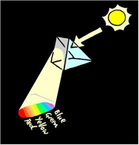
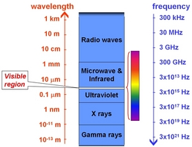

The term ‘light’ is sometimes used to refer to all electromagnetic radiation. The speed of light is c=2.99792458 × 108 m s-1 and is one of the fundamental constants of nature.
Visible light is the specific case of electromagnetic radiation that ranges in wavelength from around 330 nm (violet/blue) to 800 nm (red) and is detectable by the human eye. In the electromagnetic spectrum, it sits between infrared radiation at longer wavelengths and ultraviolet radiation at shorter wavelengths. Although visible light is considered to be ‘white’, Sir Isaac Newton showed that when passed through a prism it is dispersed into its constituent colours which in increasing wavelength are broadly violet, indigo, blue, green, yellow, orange and red.
The frequency f, wavelength λ and speed of light ( c ) are related by the wave equation:
c = f λ

